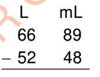
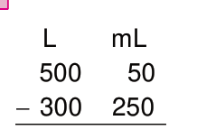
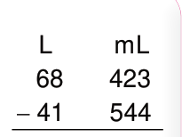
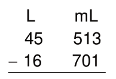
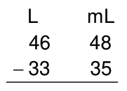
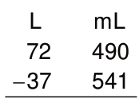

L mL
80 370
− 45 160
35 210
2. Subtract litres: 80 L − 45 L = 35 L.
Write 35 in the L column.
Therefore, the answer is 35 L 210 mL.
Example 2
L mL
15 350
− 10 370
Solution
L mL
14 1350
− 10 370
4 980
Exercise 12
1.

2.

3.

4.

5.

6.
